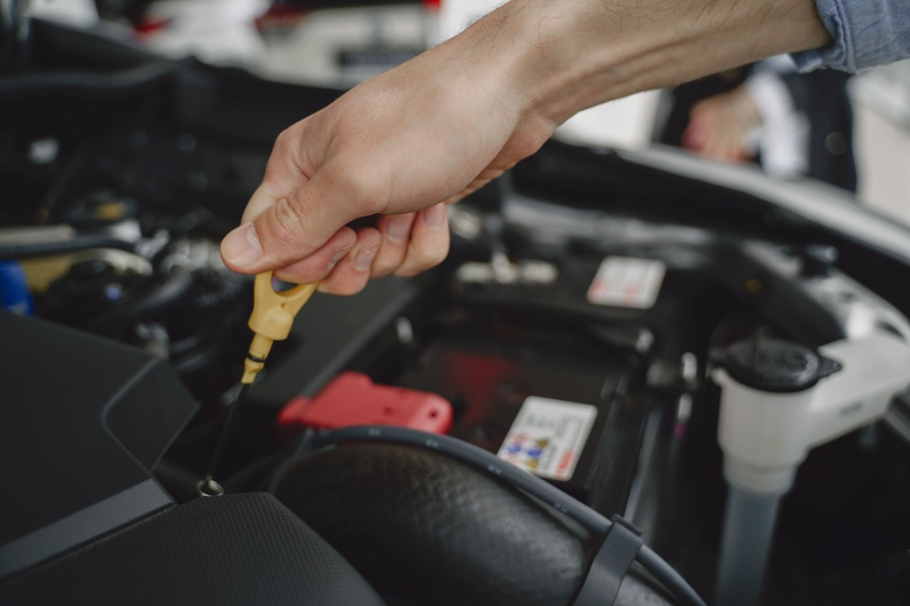
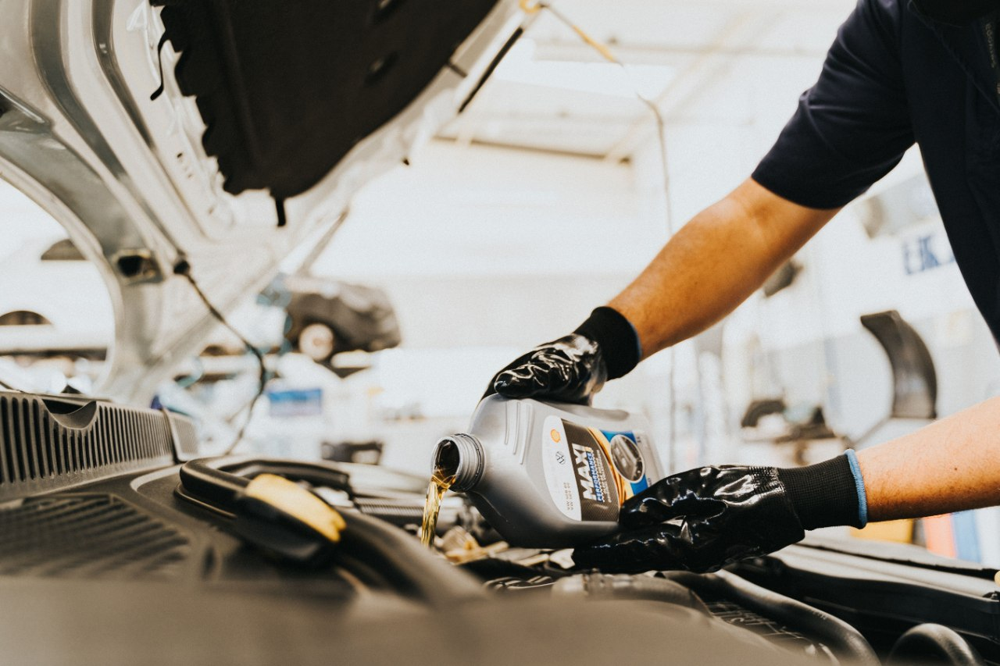
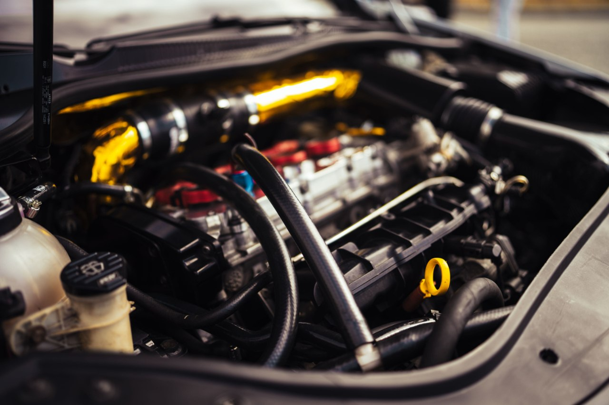
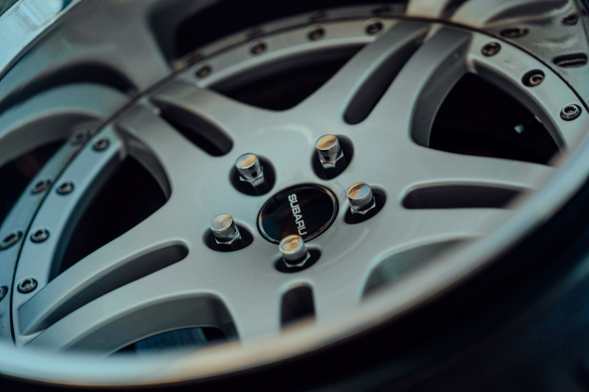
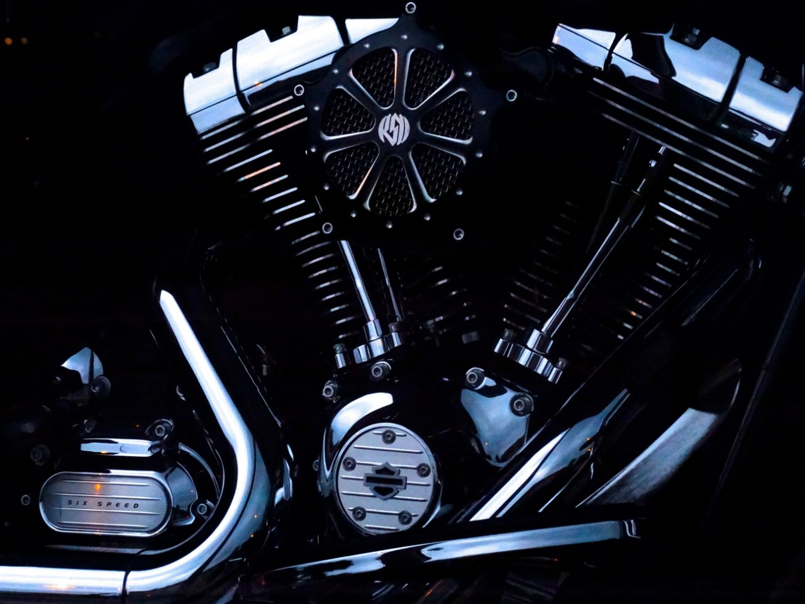
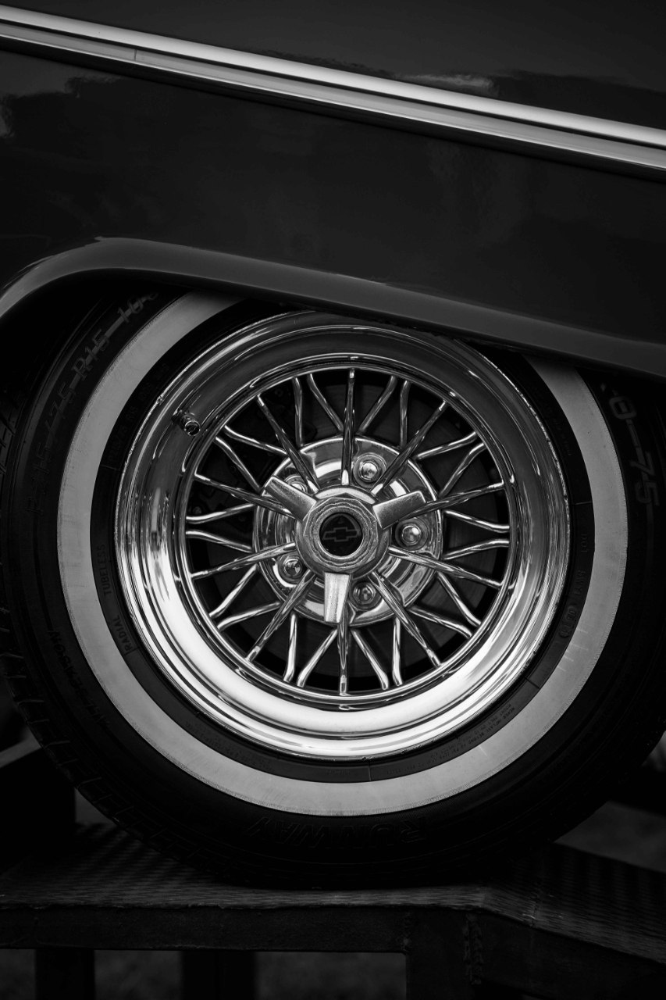
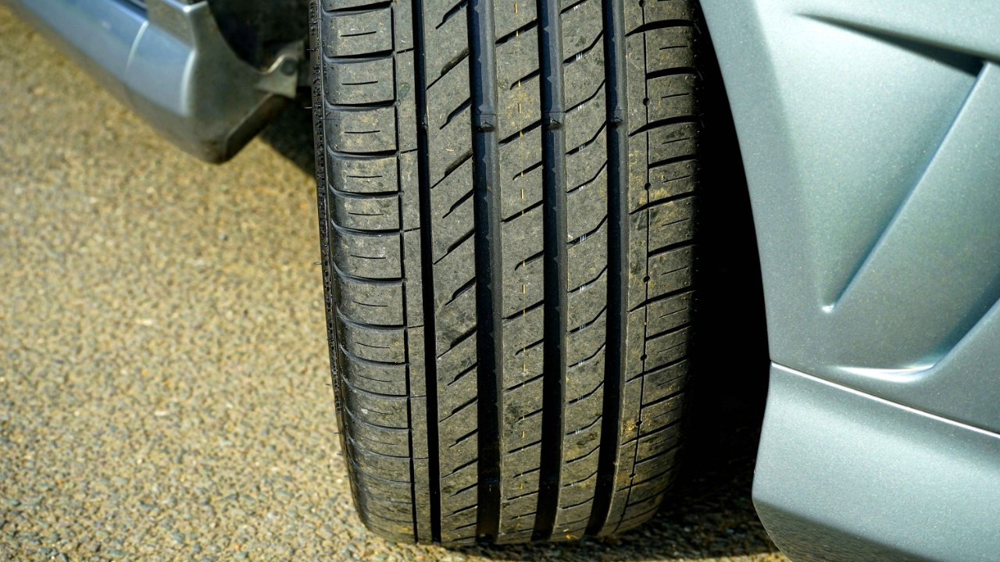

Do the job right in your own driveway.
Straightforward car maintenance and repair guides. What you need, what to watch out for, and where it usually goes wrong. Mostly brakes, oil, filters and the everyday stuff that wears out.
Brakes
Pads, rotors, fluid and the noises that mean it's time.
Oil and fluids
Changing oil, choosing the right grade, topping up and checking levels.
Filters
Oil, air, cabin and fuel filters, and how often they really need swapping.
Battery and electrical
Slow starts, warning lights, jump-starting and fuse checks.
Diagnostics
Reading symptoms and codes before spending money on parts.
Wheels and tires
Tire pressure, tread, lug nuts and wheel changes done safely.
Latest guides
 Brakes
Brakes
Brakes Squealing After New Pads? 8 Causes and Fixes
New pads, same noise? The usual causes and what you can fix at home.
 Filters
Filters
Cabin Air Filter: Signs You Need a New One and How to Swap It
Weak airflow and a musty smell? Check the cabin filter first.

Oil and fluidsHow to Read an Oil Dipstick and Check Your Engine Oil Level
How to get an accurate oil level reading and what the oil is telling you.
 Battery and electrical
Battery and electrical
Car Clicks But Won't Start: Battery or Starter?
Rapid clicking or one loud click? How to tell what failed.
 Brakes
Brakes
How Often to Change Brake Fluid and How to Check It
The most forgotten fluid on your car, and why it matters.
 Brakes
Brakes
Brake Pads vs Rotors: When to Replace Each (and Both)
Pads wear out first, but rotors don't last forever either.
 Filters
Filters
Engine Air Filter: Dirty Symptoms and How to Change It
A ten-minute job, and what to expect from it.
 Oil and fluids
Oil and fluids
Oil Filter: How Often to Change It and How to Choose One
Change it with the oil, and don't cheap out on the part.
BrakesSpongy Brake Pedal: Causes and What to Check
A soft pedal is never normal. Here's what usually causes it.
 Battery and electrical
Battery and electrical
Battery Light On While Driving: What It Means and What to Do
It rarely means the battery itself. Here's what to check.
 Brakes
Brakes
Why Do My Brakes Vibrate When Braking? Causes and Fixes
Pulsing pedal or shaking wheel? Where the vibration comes from.

Oil and fluidsBurning Smell After an Oil Change: Is It Normal?
Usually spilled oil. Here's how to tell when it isn't.
Oil and fluidsHow to Check Coolant Level and Top It Up Safely
Cold engine, MIN to MAX, right coolant. That's all.
 Maintenance
Maintenance
Wiper Blades Streaking? Signs to Replace Them and How to Do It
Streaks, squeaks and smears: when it's time for new blades.
DiagnosticsCheck Engine Light: Flashing vs Steady and What to Do
What the light means and what to check first.

Oil and fluidsWhy Is My Oil Black Right After an Oil Change?
Is dark oil a problem or just normal?
 Diagnostics
Diagnostics
Squealing Noise When Starting a Cold Car: Belt or Something Else?
How to tell a slipping belt from other noises.
 Maintenance
Maintenance
How to Change Spark Plugs and How to Know It's Time
Signs of worn plugs and a clean replacement routine.

Wheels and tiresHow to Tighten Lug Nuts Properly (Torque and Pattern)
The right order, torque and re-check after driving.
Wheels and tiresHow to Check Tire Pressure Correctly (and Where to Find the Right PSI)
Cold readings, the door sticker and common mistakes.
 Battery and electrical
Battery and electrical
How to Jump-Start a Car Safely (Step by Step)
The correct cable order, and the mistakes that damage electronics.
 Oil and fluids
Oil and fluids
How to Change Engine Oil at Home: Tools, Steps and Mistakes
A full DIY oil change from jacking up to the final dipstick check.
Oil and fluidsHow Often Should You Change Your Engine Oil?
Miles, months and driving style: what actually sets your interval.
 Diagnostics
Diagnostics
Car Overheating: Causes and What to Do Right Now
What to do on the roadside, and the usual causes once it's cooled.
 Brakes
Brakes
Grinding Noise When Braking: Causes and How Urgent It Is
Metal on metal or just rust? How to tell, and when to stop driving.
 Battery and electrical
Battery and electrical
How to Test a Car Battery With a Multimeter (and What the Numbers Mean)
Voltage readings explained, plus a quick alternator check.
 Brakes
Brakes
How to Change Brake Pads Yourself: Step-by-Step Guide
Tools, safe lifting and the steps that people get wrong.
 Oil and fluids
Oil and fluids
Engine Oil Viscosity Explained: 5W-30 vs 5W-40 and More
What the numbers mean and how to choose the right grade.

DiagnosticsRough Idle: Causes and What to Check First
Shaking at traffic lights? The common causes, from cheap to costly.
 Diagnostics
Diagnostics
Exhaust Smoke Colors: White, Blue, Black and Gray Explained
What each color of smoke tells you and which ones are urgent.
 Diagnostics
Diagnostics
Car Cranks But Won't Start: Causes and Checks
Fuel, spark or air? A simple order of checks before you call a tow.

Wheels and tiresSteering Wheel Shakes at Highway Speed: Causes and Fixes
Balancing, tires, brakes or suspension? Where to look first.

Wheels and tiresTire Tread Depth: How to Check It and When to Replace
The coin test, legal limits and wear patterns that signal other faults.
 Oil and fluids
Oil and fluids
Fluid Leaking Under Your Car: What Each Color Means
Oil, coolant, brake fluid or water? Identify the leak and how urgent it is.
 Wheels and tires
Wheels and tires
How to Change a Flat Tire Safely (Step by Step)
Jack points, nut order and the checks to do before you drive off.
How these guides are written
I work at a BMW service and do routine maintenance myself, including brakes and shock absorbers, and I write down what I learn so the next person doesn't have to dig through ten forum threads. Where something is specific to one car, I say so. Where a step can go wrong, I say that too. Always check your own vehicle's manual for exact specs.